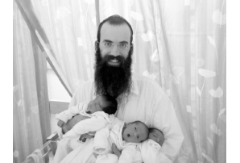

The Joy of Torah Opened the Floodgates
Rabbi Zalman Bernstein and his wife Shaindy, the Rebbe’s shluchim in Cochin, India, had been waiting for several years since their wedding to be blessed with children. At a certain stage they heard about a dollar from the Rebbe that helped many couples to be blessed with “zera shel kayama.” Numerous spontaneous events took place along the way, giving them the feeling that the path to receiving the long-awaited bracha had finally been opened. A very moving miracle story.

“We decided to tell this story out of a sense of gratitude to the Rebbe, Melech HaMoshiach, as per his holy instructions to publicize miracles as part of the process to hasten the Redemption,” said Rabbi Zalman Bernstein, the Rebbe’s shliach in Cochin, located on the subcontinent of India.
Together with his wife Shaindy, R’ Zalman recently welcomed the birth of triplets, three healthy baby boys, in a good and auspicious hour, and their joy knew no bounds. More than four years had passed since their marriage, yet throughout this time they remained faithful and confident that it was only a matter of time before their prayers would be answered.
A series of amazing Divine Providences with a clear bracha from the Rebbe via Igros Kodesh on Simchas Torah last year in Beis Chayeinu paved the way for the joyous moment they have just experienced.
“The Rebbe didn’t just give us a bracha; he was there for us at every turn. We were privileged to receive an answer to each of our questions. We felt that the Rebbe was with us at every step, dealing with any and all problems leading up to the birth,” said Rabbi Bernstein in a voice filled with emotion. “While we have seen many miracles on shlichus, I can safely say that this is the first time that we really felt how the Rebbe walks hand-in-hand with us.”
A WANDERING DOLLAR
The Bernsteins got married in the winter of 5769. From the very outset it was clear that they would be going out on shlichus to prepare another place on the globe to greet Moshiach Tzidkeinu. “After our ‘first year,’ and with a bracha from the Rebbe, Melech HaMoshiach, we made our way to India and opened a Chabad House in the city of Cochin.
“Weeks and months passed, but we did not see a sign of a future addition to our family. We believed that it would come soon, but as time passed with no progress, we began a series of check-ups and examinations. During every visit we made to Eretz Yisroel, we arranged appointments with specialists in the field of gynecology. While there were moments of great exasperation, we remained confident that as shluchim of the Rebbe, the shepherd never abandons his flock, and it’s all just a matter of time.
“Before Shavuos 5772, I heard a story from one of my friends about a chassid living in Tzfas who also went many years after his wedding without having any children. He traveled to 770 for Simchas Torah and received a dollar from a local Chassid, given by the Rebbe for ‘zera chaya v’kayama.’ Incredibly, the Chassid from Tzfas became a father that same year. I thought about how I could obtain this dollar as a segula for children, but I didn’t know who the Chassid in Tzfas was, and I assumed that he had given the dollar back already.
“I heard the name of the Chassid from Crown Heights just before boarding our flight to Beis Chayeinu for the Shavuos holiday. It turns out that he had been married for seven years without having any children, and after receiving the Rebbe’s bracha and two dollars for ‘zera chaya v’kayama’ – he and his wife were blessed with twins. Excited by this discovery, I decided to meet him and ask for one of the dollars.
“During our stay in Crown Heights we also dealt with matters pertaining to our shlichus in Cochin, and by Divine Providence, I met this Chassid – Rabbi Yosef Yitzchak Spalter – on Kingston Avenue, shortly before our return to Eretz Yisroel. I told him about ourselves, our shlichus in India, our lengthy wait to be blessed with children, and then I asked him if he could lend us one of the dollars he had received from the Rebbe.
“He was most impressed by the stories of great self-sacrifice required on our shlichus, and he then proceeded to tell his own story. His wife’s grandfather, the Chassid R’ Chaikel Chanin, had requested a bracha for them from the Rebbe on numerous occasions at dollars distribution – without receiving an explicit blessing. Then, one year on the auspicious day of Lag B’Omer, the Rebbe suddenly announced that dollars would be given out. R’ Chaikel also passed by the Rebbe, but he forgot to make a request for his grandchildren. Then, in a moment of Divine inspiration, the Rebbe turned to him and asked him if his grandchildren needed a bracha. Naturally, he immediately made a request, and the Rebbe gave him a bracha with two dollars. Their twins were born within the year.
“Regrettably, while he was very touched by our situation, he said that he was on his way to the airport for a very important flight. The Rebbe’s dollar was locked away in his safe at home, but no one besides him had access to it. He added that the first dollar was still in Eretz Yisroel with the Chassid from Tzfas, and he suggested that upon my return home, I should give him his name and ask him to give me the dollar.
“This was the very first thing we did once we got back to Eretz Yisroel. We contacted the Chassid in Tzfas, but he informed us that there was a long line of Chassidim ahead of us, and the dollar was making its way around several local families. I was very disappointed about this delay, and I asked him to add our name to the waiting list.”
MEETING CANCELLED DUE TO FARBRENGEN
“In the meantime, the Tishrei holidays of 5773 were getting closer. While we were filled with hope and anticipation, there was still no good news on the horizon. We decided that since Simchas Torah is an auspicious time for unique personal salvation, as it is also the Rebbe’s day of ushpizin, I would travel to 770 and ask for the Rebbe’s bracha. Shmini Atzeres and Simchas Torah came out on Monday and Tuesday that year, and I landed in New York a few days in advance.
“On the evening of Shmini Atzeres, I again met Rabbi Spalter in the streets of Crown Heights. I told him about the dollar creating tremendous miracles and wonders among Chabad families in Eretz HaKodesh, and I asked if he could possibly leave the second dollar with me. While I could see that this was not an easy thing for him to do, he eventually gave his consent and asked me to come to his house after Simchas Torah.
“Between Maariv and Hakafos on the night of Shmini Atzeres, about a hundred avreichim and T’mimim came to the sukka of Rabbi Amos Cohen to hear Kiddush. Suddenly, one of the bachurim got up on a bench to make an announcement. He proclaimed that there’s a shliach from India present who has been married for three and a half years without any children, and he asked everyone to give us a bracha. They all said ‘Amen,’ and blessed us from the depths of their hearts. For the first time, I had a good feeling that this Simchas Torah would elicit the Divine blessing we had been waiting for so long.
“As this bachur stood on the bench and spoke, I suddenly recalled that once when we wrote a letter to the Rebbe on this matter, there was an answer that we should ask Chassidim to bless us during a Chassidic farbrengen. Now I really felt that things were starting to develop. After Kiddush we happily walked back to 770 for Hakafos, and I gave a ‘L’chaim’ to everyone I met that night, asking each of them to bless us with ‘zera chaya v’kayama.’ I felt that even those I had never met before were giving us their bracha with the utmost sincerity. It’s difficult to describe the sense of brotherly love I experienced that night, a true inner love that can only exist among Chassidim on the holy day of Simchas Torah. I went around that Yom tov in a state of sheer spiritual elation.
“On Wednesday, Isru Chag, I was supposed to go to Rabbi Spalter’s house and ask for the Rebbe’s dollar. Before leaving 770, I met my friend and fellow shliach, Rabbi Ran Shamir, Chabad House director in Kodai Kanal, India, and we chatted for a few minutes. He’s my closest ‘neighbor’ on shlichus, and we naturally coordinate our activities with guests traveling between our two cities. As we were talking, an avreich passed near us and started speaking with Rabbi Shamir, who immediately introduced us. This Chassid, Rabbi Berel Pashtar, serves as a mashpia at the Chabad yeshiva in Brunoy, France.
“The three of us began a friendly conversation, a kind of stand-up farbrengen that can only happen in 770. We told stories of the Divine Providence and the challenges we encounter on our shlichus in India, while he related his own experiences over the years in Beis Chayeinu with the Rebbe MH”M. We stood talking for three hours, paying no attention to the passing time. When I saw that it was already past midnight, I decided to postpone going to Rabbi Spalter’s house to pick up the dollar until the following day.
“I had some regret over this, as this dollar was very important to me and I didn’t want to waste this opportunity. Nevertheless, it was quite clear to me that I simply could not leave a Chassidic farbrengen in the middle.”
THE MIRACLE DOLLAR AT THE END OF THE FARBRENGEN
“Towards the end of this impromptu farbrengen, at around one o’clock, Rabbi Pashtar said that while we had never met before, he knew me quite well. How? From an article written about us in the ‘Beis Moshiach’ Magazine the year before. He said that before the Yud-Tes Kislev farbrengen, the magazine had arrived at his home. He read the article before going out to farbreng with the yeshiva students, and the farbrengen dealt primarily with stories on shlichus about the Chabad representatives in Cochin.
“Rabbi Pashtar added quite casually that an avreich with no children had participated in the farbrengen, and as he (Rabbi Pashtar) customarily did on such occasions, he took a dollar out of his pocket that he had received from the Rebbe. He firmly believed that the dollars given to him by the Rebbe were not his own private property, but rather they were a source of Divine blessings that must be passed on to others in need of personal salvation. He gave a dollar to this avreich, and less than a year later, he was blessed with the birth of his first-born son.
“Chills went up my spine as I heard what he said; I was in exactly the same predicament. I immediately told him about our years of waiting for children of our own. Rabbi Pashtar was deeply moved, and he took out the one dollar he had in his pocket and gave it to me. We were both amazed when we saw what was written on the dollar: ‘Received on Yud-Tes Kislev 5746’ – just after he had told us about what had happened at a Yud-Tes Kislev farbrengen. I initially felt that I lost out on receiving the Rebbe’s dollar because of this farbrengen, and here the Rebbe miraculously sends me another dollar in its place…
“I believed that the Rebbe was sending me a clear sign that everything would turn out just fine. Rabbi Pashtar, a Chassidic Jew, who lived the Rebbe at every moment, explained to me that he felt how this dollar had merely been deposited with him. He suggested that I picture in my mind that the Rebbe was giving me this dollar right now, and I should request whatever I wished. Thus, when the three of us parted from one another, this is just what I did. I asked the Rebbe for a bracha that we should merit that year to become parents at long last.
“I went around for two days in a very excited state. I felt that the channel had finally been opened, all obstacles had been removed, and now we would merit to receive the Rebbe’s bracha.”
A DOUBLE BRACHA
“On Friday night, after I finished saying the bedtime Krias Shma in 770, I went over to the library shelves containing volumes of Igros Kodesh and requested a bracha from the Rebbe. In fact, I was seeking some confirmation for what I was feeling in my heart. I took Vol. 11 off the shelf, and the seifer opened to pg. 162. I was dumbfounded as I read the content of the letter:
As to his announcement about the condition of his wife, tichye.
It would be appropriate to check the mezuzos in their home (if they haven’t been checked during the last twelve months), and check his t’fillin, and his wife will surely act according to the custom of kosher Jewish women to set aside [coins for tz’daka] before candle lighting each Erev Shabbos Kodesh and Erev Yom tov.
May G-d Alm-ghty complete the days of her pregnancy in proper order, and she should have an easy birth to zera chaya v’kayama in the right time.
“It seems that when the Rebbe gives a bracha, he does so in a very clear way – without vague hints or gematrias. I shook with great emotion as I was simply beside myself with joy.
“I was absolutely certain that we would be parents by that same time next year.
“With much eagerness, I waited until Motzaei Shabbos, washed my hands, made a good resolution, and wrote a lengthy correspondence to the Rebbe about everything we had gone through over the past four years. I now felt that the time had come to say what had to be said. I thanked the Rebbe for his brachos, and I asked that everything should go easily. After I had finished composing my letter, I took one of the volumes of Igros Kodesh off the library shelves and opened it.
“As I started reading the Rebbe’s reply I got the feeling that I had seen this letter before… Imagine how stunned I was when I looked at the seifer, and saw that I was reading pg. 162 from Vol. 11. The Rebbe had given me the same answer in the same volume on the same page. Overwhelmed by the apparent Divine Providence, I called my wife and told her what had transpired. I felt that the Rebbe was calming us down, assuring us that everything would be all right.
“Shortly after Simchas Torah, I returned to Eretz HaKodesh with great faith and confidence.”
THE REBBE IS WITH US – THROUGH HIS CLEAR AND ENCOURAGING ANSWERS
“I didn’t waste much valuable time upon my return to Eretz Yisroel, and I quickly went to a sofer with my t’fillin. It turned out that due to the hot and humid weather in the city of our shlichus, a problem had developed with the battim. I ordered new battim and in the meantime, we had the mezuzos checked.
“While I was waiting for the new battim, I urged the sofer to finish his work as quickly as possible, as the Rebbe’s bracha depended upon it.
“In fact, when we received the t’fillin at the beginning of Kislev, we also got the news we had long been waiting for. We were simply overjoyed. Everything seemed to be falling into place. The Jewish People do indeed have a Nasi.
“Throughout the months of the pregnancy, we constantly felt the Rebbe’s presence. During the fifth month, my father wrote a letter to the Rebbe for us and received an amazing answer. The Rebbe noted the fifth month, writing ‘and she surely is visiting a doctor, as is customary.’ We felt that at every stage leading up to the birth, the Rebbe was there with precise answers as if they had been written just for us. Three times during the pregnancy, we received very clear answers for an easy birth.”
A THREE-FOLD BRACHA
“On the 21st of Elul, we saw the realization of the Rebbe MH”M’s bracha with our own eyes – at the birth of our three sons, healthy and strong,” said Rabbi Bernstein as he concluded his deeply moving story.
“We have a Rebbe, and we can turn to him and see the fulfillment of his brachos. Fortunate are we to be his Chassidim.”
Nosson Avrohom. "The Joy of Torah Opened the Floodgates." Beis Moshiach, no. 903 (November 19, 2013).